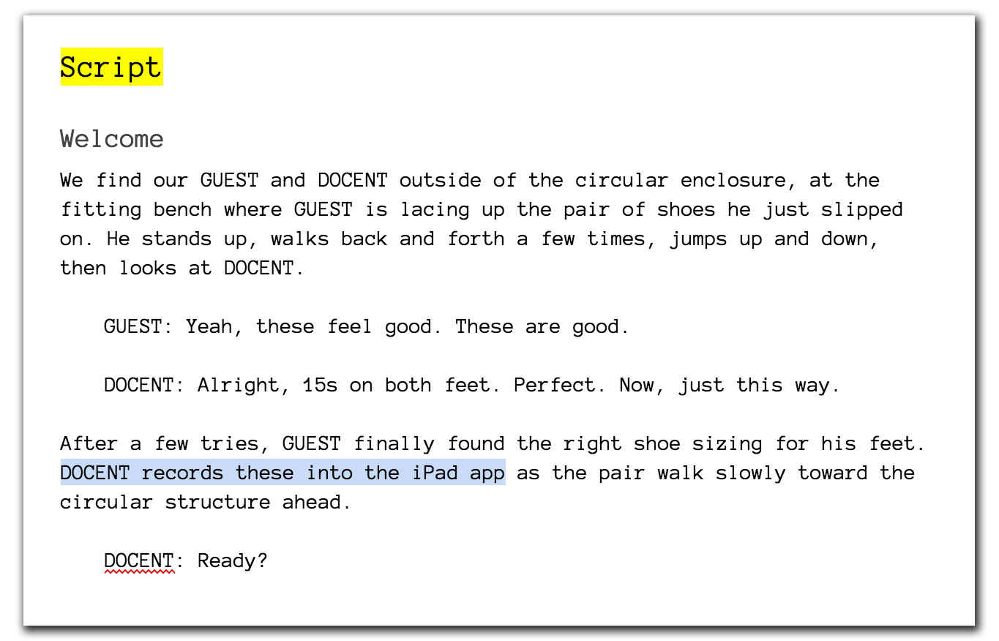
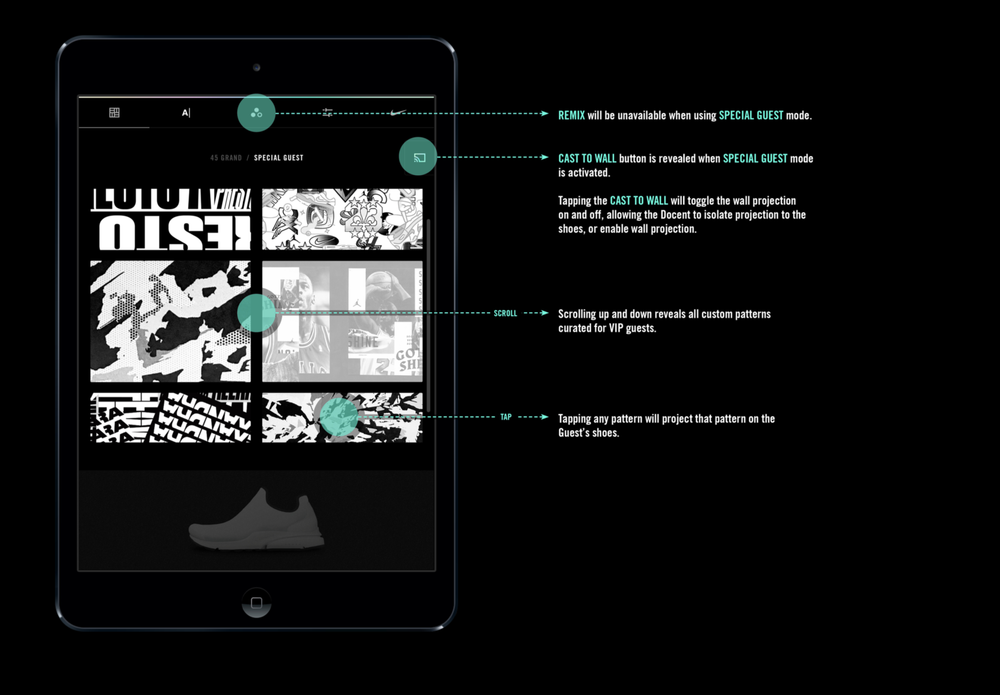

Nike by You (Maker's Experience) Tool
What
Nike by You: a 1-1 custom shoe designing experience in Nike's SoHo-based product center.
Role
UX designer, tooling and interaction design. I was tasked with prototyping, testing, validating, and documenting the tool used to execute on the custom design experience held at Nike's studio in NYC.
Artifacts Produced
Initial Prototypes
Using Framer, I prototyped early versions of the final tool that were eventually used with a user testing group. During the testing phase, we explored different interfaces and gained insight as to what the user was looking to actually accomplish during their design session.
UX Scripts
Numerous scripts were written throughout the final client feedback phase, each iterating on th elast and helping our design team to feel out what worked and what did not.

Sample of the script used to reason out and prototype the flow of the experience at 45 Grand in NYC.
Annotated Interaction Designs
Apart from prototyping a much earlier version of the final tool, I was asked to annotate the end-to-end functionality of the final tool used in back of house at Nike's 45 Grand Nike by You experience in NYC.

An example of the annotations put to paper for the tooling used in the experience.
The experience bridges the gap left behind by current customization tools, where garments, or shoes, are designed. The problem with these experiences is that we wear clothing on our bodies, not on computer screens. Design by You changes that.
In the Nike by You experience, customers walk into an arena with blank Nike shoes on, and the shoes are designed on their feet as they speak to a system that listens for the next command.
Early prototyping of the experience involved an iPad-based tool that needed to be learnt by the in-house team. The tool, in turn, also needed to be explained to stakeholders throughout the process. The natural result was a document which detailed each and every step through the process of the design.
As an additional detail, each step corresponded to a system-level interaction map that referenced data structures used to transmit design patterns between the controller, the projectors, and, ultimately, back of house.